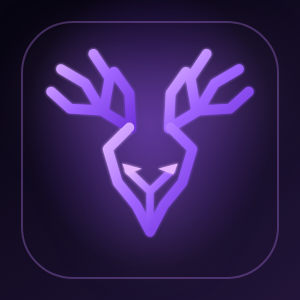
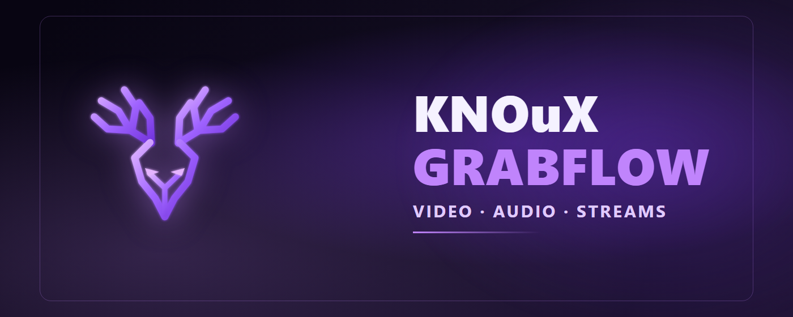
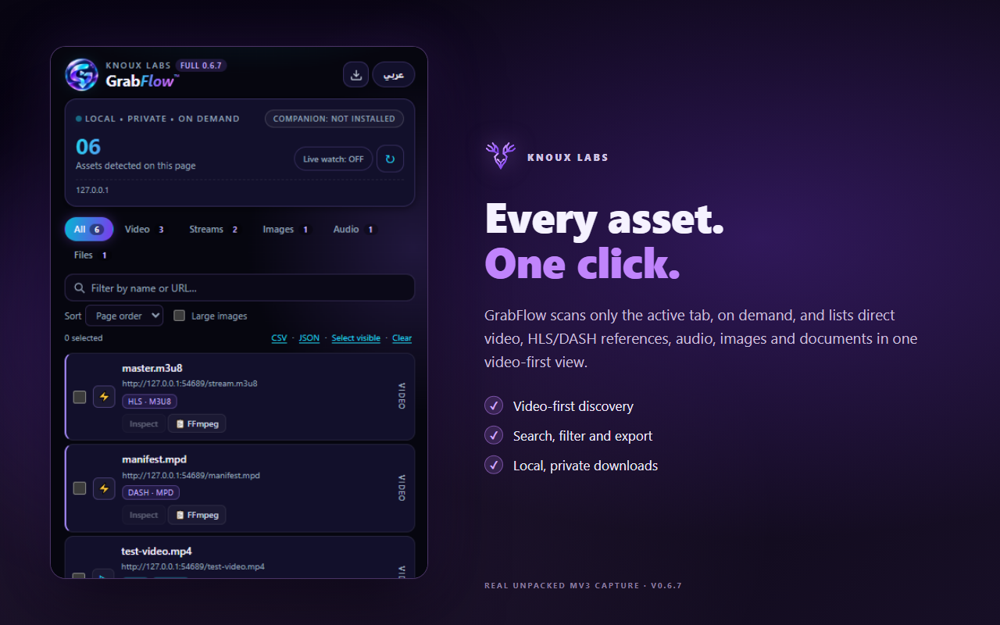
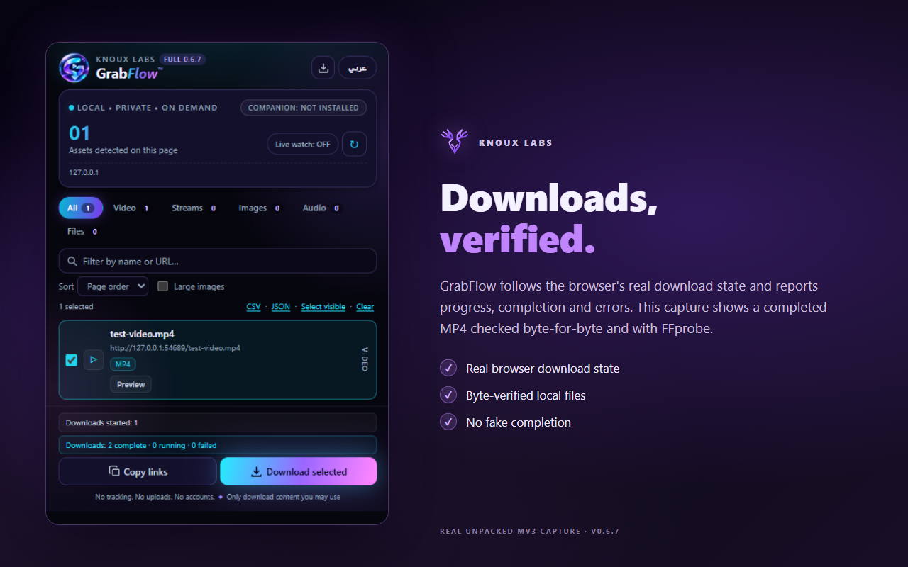
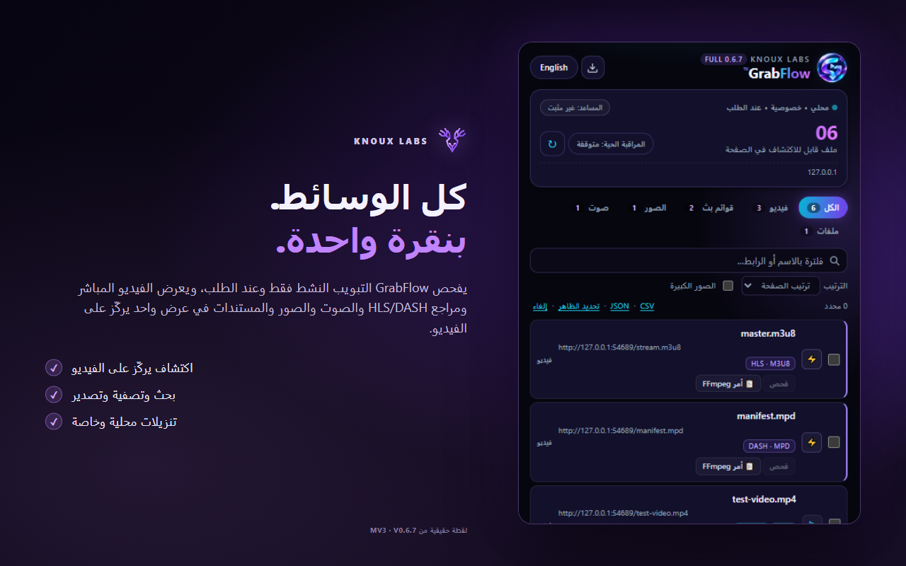

🌐
Google Chrome
Manifest V3 browser extension for desktop Chromium. Direct downloads; native stream assembly requires separate setup.
Download Chrome ZIPv0.6.7 · 167,640 bytes · SHA-256 checksums in release

KNOuX GrabFlowDiscover eligible media on the page you choose. Download direct files in your browser, or assemble supported unprotected streams with an optional local Native Companion.

These are independently verified release archives. Store approval is separate and is not claimed here.
Manifest V3 browser extension for desktop Chromium. Direct downloads; native stream assembly requires separate setup.
Download Chrome ZIPv0.6.7 · 167,640 bytes · SHA-256 checksums in release
Tested desktop Edge extension with real download lifecycle, persistent jobs and Arabic RTL.
Download Edge ZIPv0.6.7 · 167,640 bytes · SHA-256 checksums in release
Installable VSIX companion, with bundled native helper scripts. Python/FFmpeg must be installed separately for stream tools.
Download VSIXv0.6.7 · 58,602 bytes · Tested VS Code extension-host activation
Screenshots are derived from tested extension runtime captures, not invented features.


